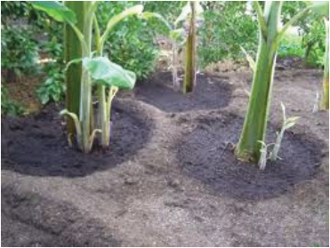
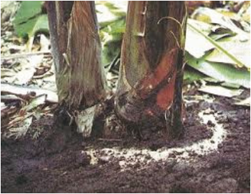

Procedure for fertiliser application in banana
Before applying fertilisers to any crop, including bananas, it is important to consult
agricultural experts to conduct soil tests to determine the status of nutrients and
pH level for the given crop. This helps understand what nutrients are lacking and
the type of fertiliser required. The following procedure is recommended when
applying fertiliser to banana plants.
(i)
Weed the field;
(ii) Choose the right fertiliser;
(iii) Water the plant a day before applying fertiliser to help with absorption;
(iv) Spread the correct quantity of fertiliser evenly around the base, but
ensure it does not touch the stem;
(v) Water the plants thoroughly after applying the fertiliser to help dissolve
the nutrients and carry them to the roots;
(vi) Apply mulch around the base of the plant to retain moisture and
suppress weeds. Use organic materials like straw, grass clippings, or
leaves; and
(vii) Keep records of fertilisation schedules, types, and amounts used for
future reference and to track plant performance.


Figure 2.4: Fertiliser application in banana
Pest management
Banana crop is affected by several pests. The major pests affecting the crop
include weeds, nematodes and diseases. These should be dealt with to maximise
crop productivity. Management practises for each are explained herein.